Bản đồ
Bản đồ được chia theo chế độ. Ảnh và danh sách được đối chiếu với các kênh Delta Force chính thức ngày 12/11/2026.
Operations
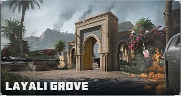
Layali Grove
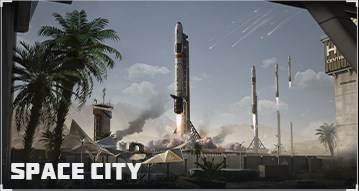
Space City
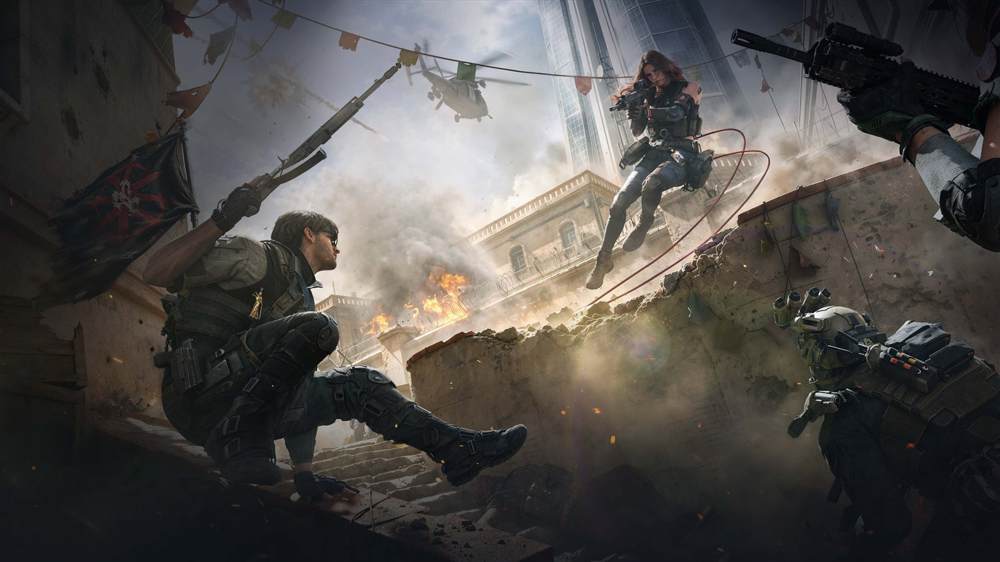
Brakkesh
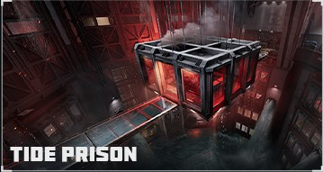
Tide Prison
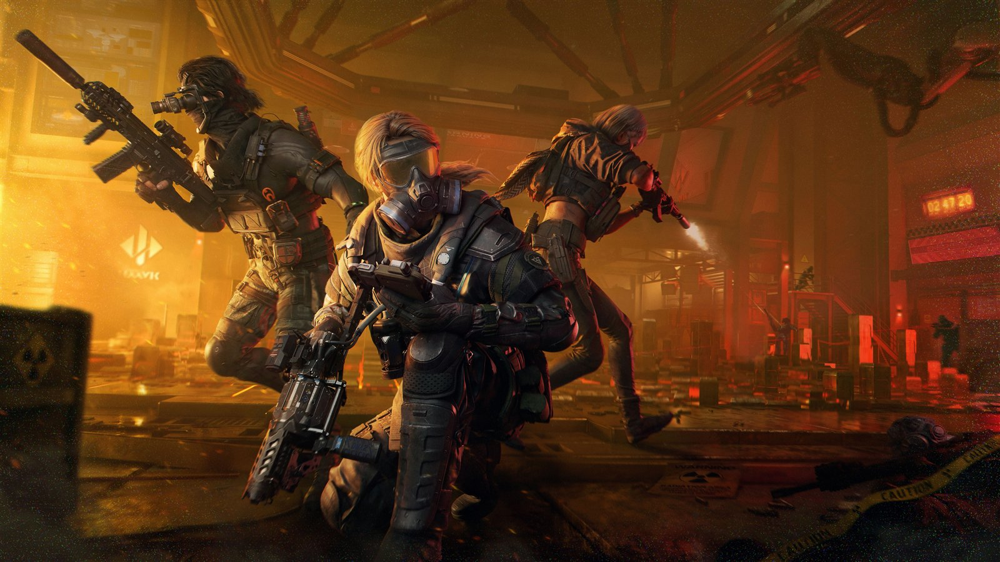
AZ3
Hot Zone
Sáu khu vực Hot Zone được giới thiệu trong bản cập nhật Ahsarah.
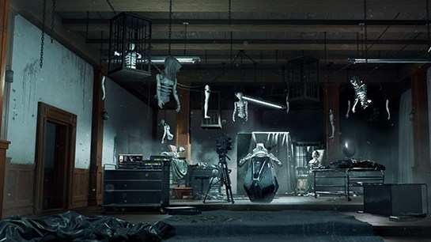
Zero Dam AC
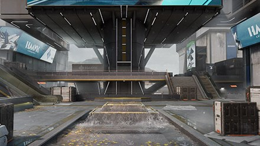
Space City Core Area
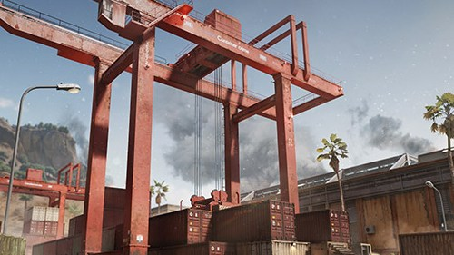
Tide Prison Core Area
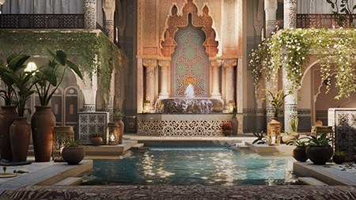
Layali Grove Sparkling Empress Hotel
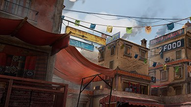
Brakkesh Market
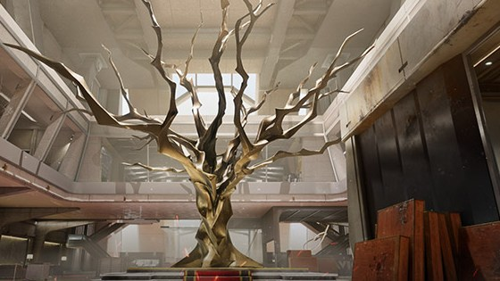
Brakkesh New Tower of Babel Top Floor
Warfare
Tên theo danh mục HQ và các bản cập nhật chính thức. Bộ lọc HQ ghi “Pyramid” và “Island Warfare”; ảnh mùa giải gọi các chiến trường tương ứng là Monument và Cyclone.
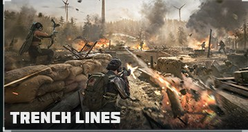
Trench Lines
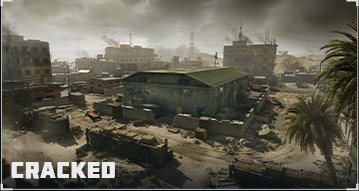
Cracked
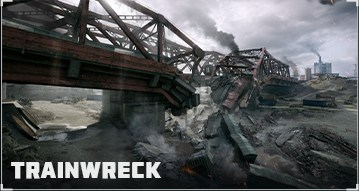
Trainwreck
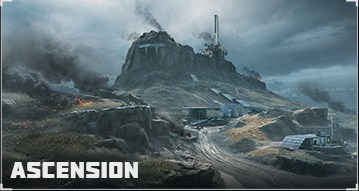
Ascension
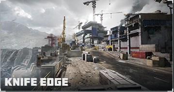
Knife Edge
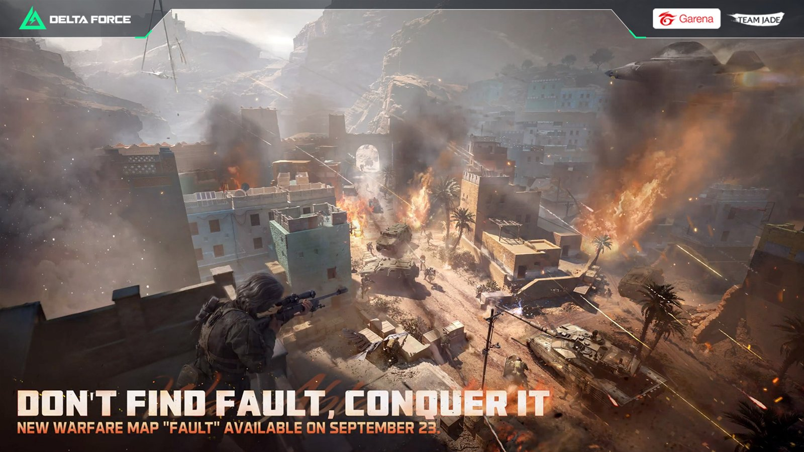
Fault
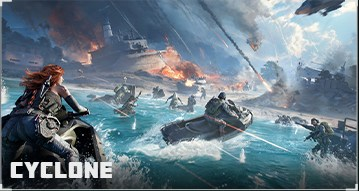
Cyclone / Island Warfare
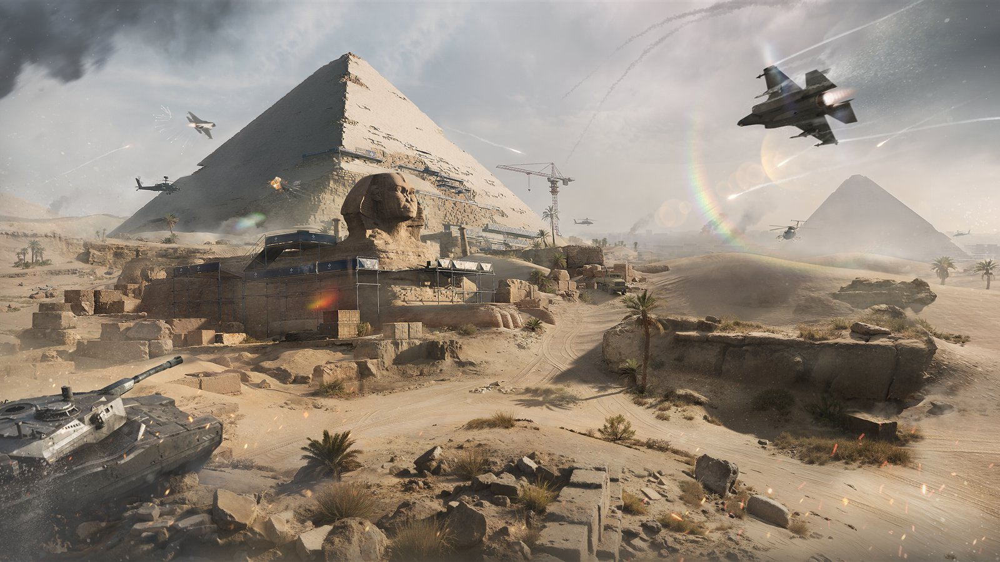
Monument / Pyramid
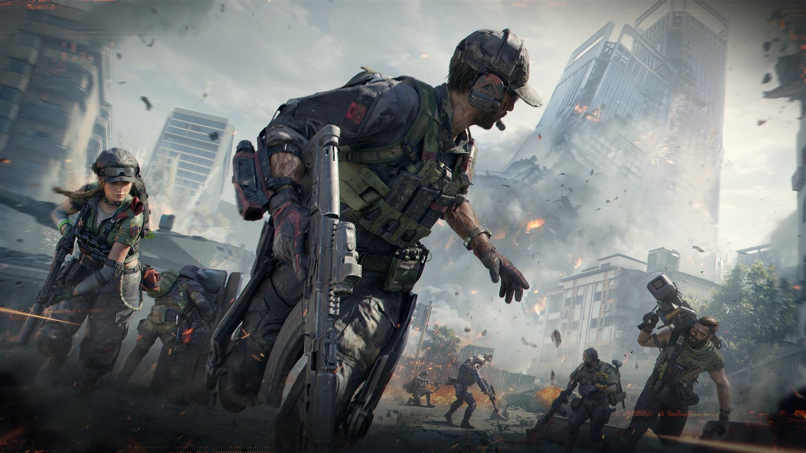
Aftershock
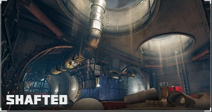
Shafted
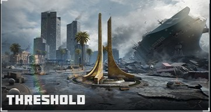
Threshold
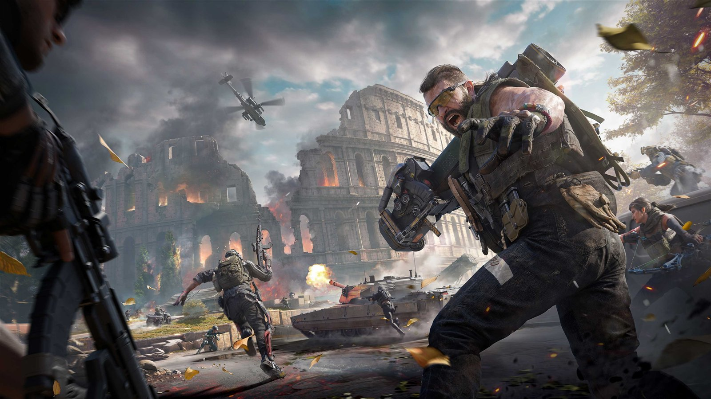
Coliseum
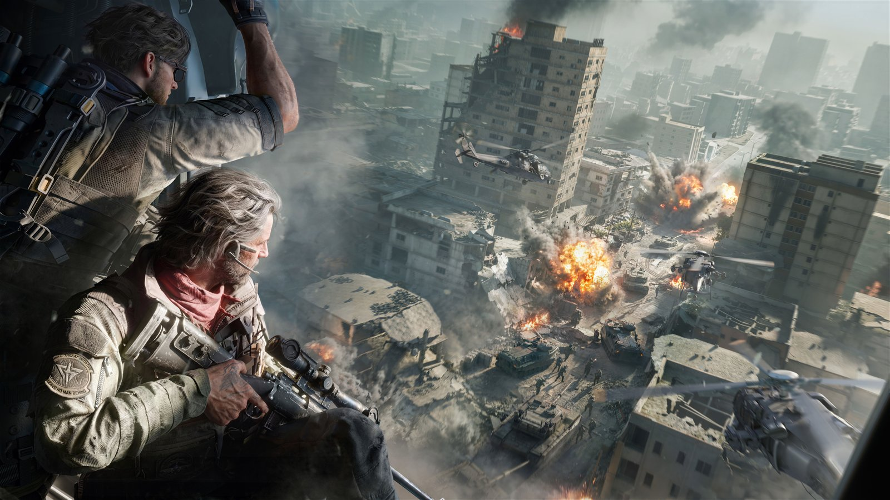
The Mog
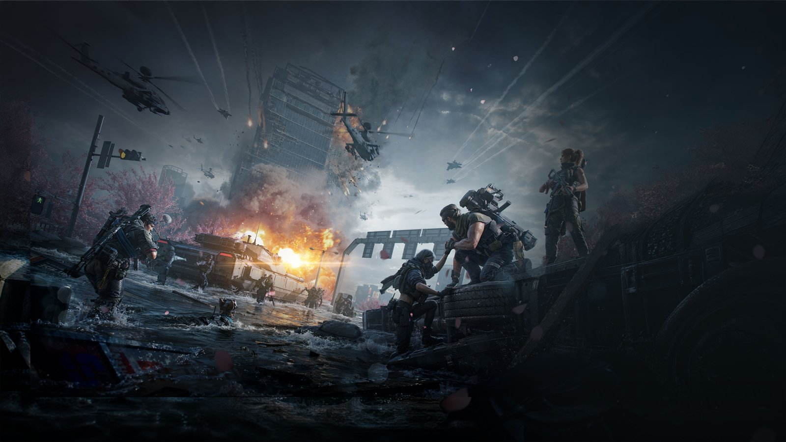
Zenith Port
Đã rời vòng xoay
Akh Canal được giữ ở đây để tiện tra cứu; bản cập nhật Aurora mùa S12 thông báo gỡ bản đồ này.
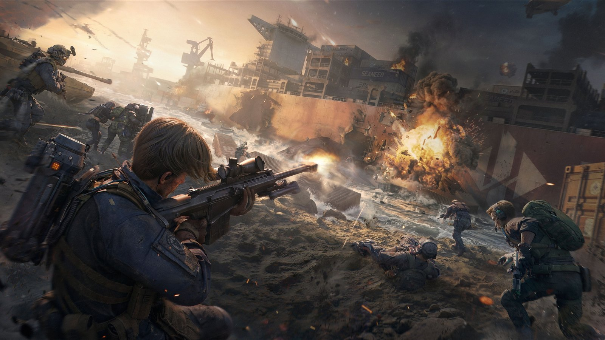
Akh Canal · Đã gỡ S12
Detonation
Chế độ đặt/gỡ bom có điều chỉnh bố cục riêng trong S12. Danh mục HQ hiện chưa công bố tên bản đồ riêng cho chế độ này; xem bản đồ Warfare ở trên để tra cứu các chiến trường được liệt kê chính thức.
Black Hawk Down
Chiến dịch co-op diễn ra tại Mogadishu, gồm bảy chương nhiệm vụ.
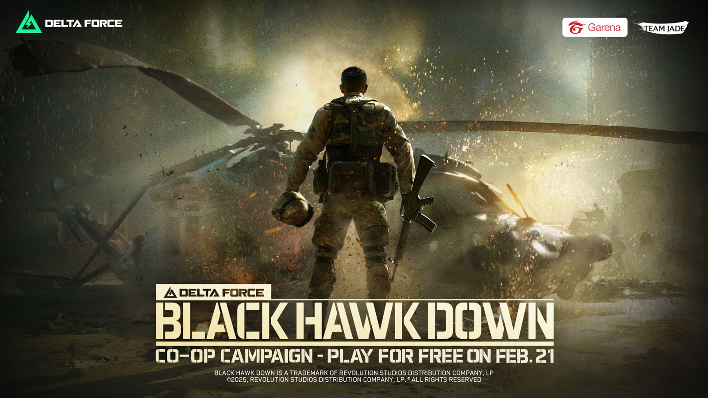
Mogadishu
Irene · The Fuse · Black Hawk Down · Lost Convoy · Valor · N.S.D.Q. · Mogadishu Marathon